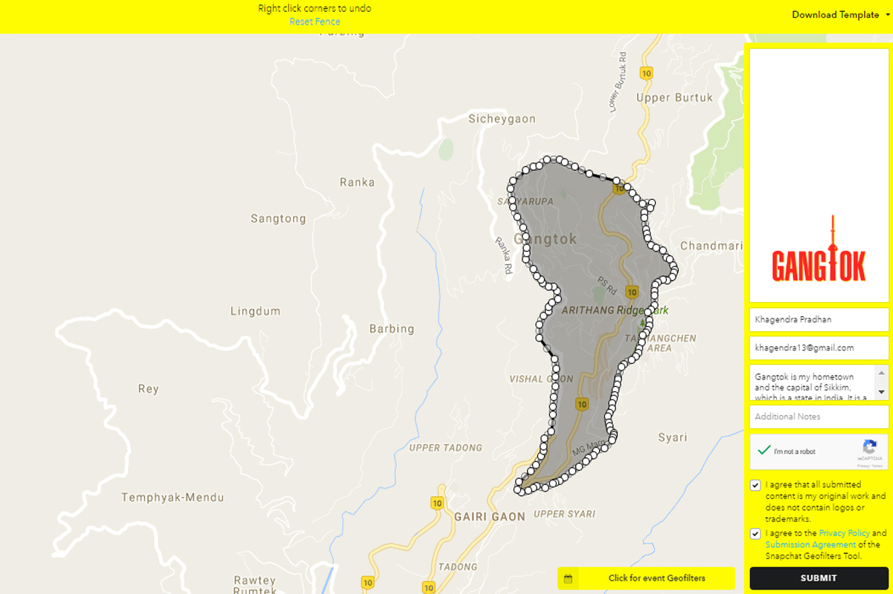

Snapchat Geofilter
Illustration
About Geofilter
Geofilters are creative overlays that capture where you are or what you're up to in a Snap!
Gangtok Geofilter
Gangtok geofilter is a geofilter created for the location of Gangtok, which is my hometown and the capital of Sikkim, India. Gangtok is a beautiful hill town with the altitude of 5,410 ft. It is one of the most popular places in north-east India among tourist due to its scenic beauty. If you have a bird’s eye view of Gangtok you will be able to see the TV Tower very distinctly, which is the tallest structure in Gangtok.
In the geofilter, I’ve added this structure. I chose the color red and yellow because the flag of Sikkim comprises of these two colors.

